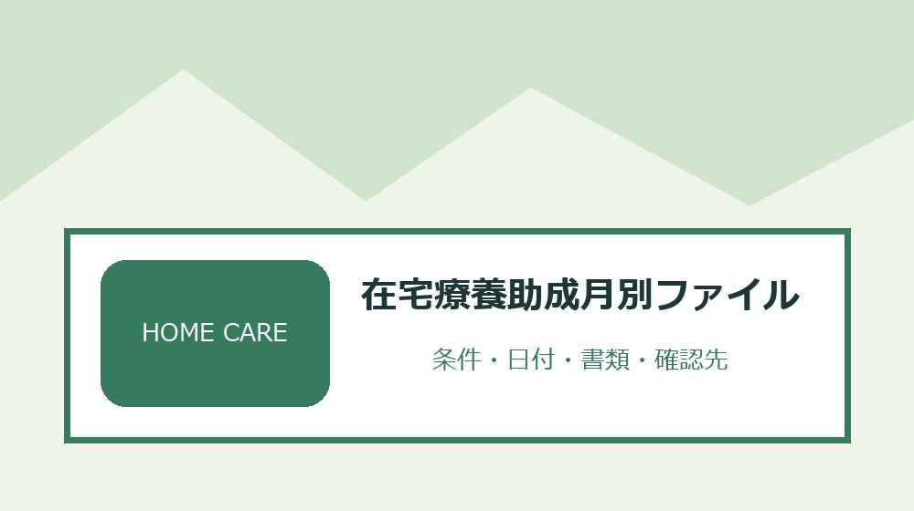
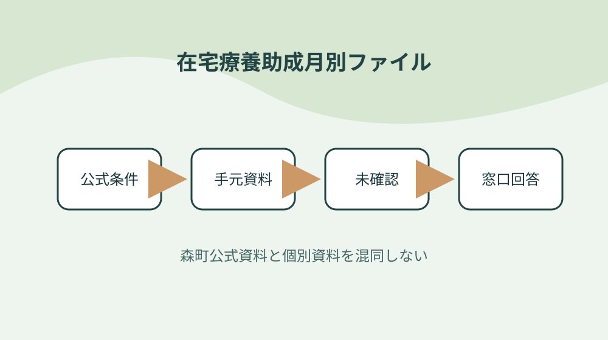
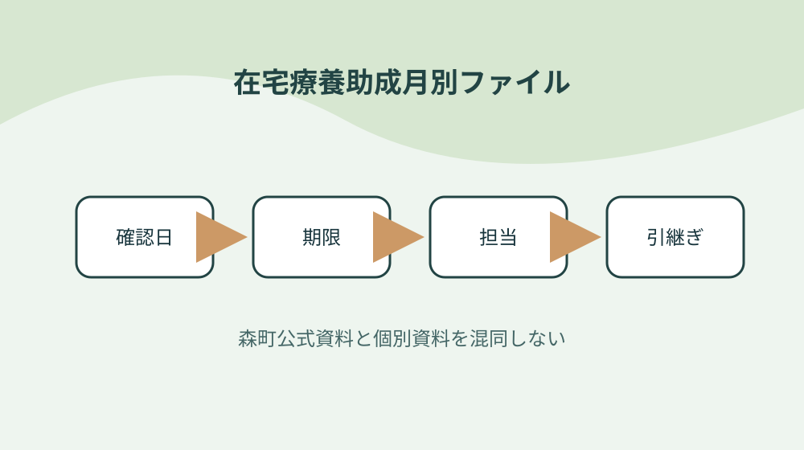

森町の小児・若年がん在宅療養助成を利用前申請・月別請求で管理する

結論：利用開始日から逆算することから始め、領収書を利用月で束ねる条件と「森町は四十歳未満のがん患者の在宅療養費を助成する」の根拠を在宅療養助成月別ファイルへ結びます。期限と次の確認先まで一行にすれば、森町の小児・若年がん在宅療養助成を利用前申請・月別請求で管理する作業の取り違えを減らせます。
利用開始日から逆算する
森町公式資料で確認できる事実は「森町は四十歳未満のがん患者の在宅療養費を助成する」です。利用開始日から逆算するでは、この条件を在宅療養助成月別ファイルの一行へ写し、対象者・対象物・確認日を同じ欄に置きます。制度名だけをメモせず、どの資料のどの条件を確認したかが家族や担当者にもたどれる形にしてください。
利用開始日から逆算するを確かめるときは、「居宅サービスと福祉用具の貸与・購入が対象区分にある」という公式条件と、手元の通知・領収書・型番・日付を別列にします。必要資料が揃わなければ空欄を推測で埋めず、在宅療養助成月別ファイルへ未確認の理由と次の照会先を記します。この表の役割は結論を急ぐことではなく、森町の小児・若年がん在宅療養助成を利用前申請・月別請求で管理するで起きる食い違いを安全に発見することです。
在宅療養助成月別ファイルの作業日は、①「申請日から利用日まで継続して森町に住所が必要である」の掲載資料と更新日を見る、②利用開始日から逆算するの手元資料を照合する、③不足一点だけを窓口へ尋ねる、④回答日と担当を追記する順に進めます。共通条件だけで個別可否を断定せず、森町の小児・若年がん在宅療養助成を利用前申請・月別請求で管理するに関する最新の運用を実行前に確かめます。
在宅療養助成月別ファイルを引き継ぐ欄には、「治癒目的の治療を行わないとの医師判断が要件にある」の確認結果、次に行うこと、期限、原本の保管場所を書きます。利用開始日から逆算するを更新したら旧版を消さず、変更理由と回答した窓口を一行添えます。担当者が替わっても、その事実をどの資料で確かめたかまで戻れるため、同じ問い合わせや書類の取り直しを減らせます。
住所と年齢要件を確認する
森町公式資料で確認できる事実は「申請日から利用日まで継続して森町に住所が必要である」です。住所と年齢要件を確認するでは、この条件を在宅療養助成月別ファイルの一行へ写し、対象者・対象物・確認日を同じ欄に置きます。制度名だけをメモせず、どの資料のどの条件を確認したかが家族や担当者にもたどれる形にしてください。
住所と年齢要件を確認するを確かめるときは、「治癒目的の治療を行わないとの医師判断が要件にある」という公式条件と、手元の通知・領収書・型番・日付を別列にします。必要資料が揃わなければ空欄を推測で埋めず、在宅療養助成月別ファイルへ未確認の理由と次の照会先を記します。この表の役割は結論を急ぐことではなく、森町の小児・若年がん在宅療養助成を利用前申請・月別請求で管理するで起きる食い違いを安全に発見することです。
在宅療養助成月別ファイルの作業日は、①「サービス利用日に四十歳未満であることを確認する」の掲載資料と更新日を見る、②住所と年齢要件を確認するの手元資料を照合する、③不足一点だけを窓口へ尋ねる、④回答日と担当を追記する順に進めます。共通条件だけで個別可否を断定せず、森町の小児・若年がん在宅療養助成を利用前申請・月別請求で管理するに関する最新の運用を実行前に確かめます。
在宅療養助成月別ファイルを引き継ぐ欄には、「利用者負担は対象サービス料の一割相当」の確認結果、次に行うこと、期限、原本の保管場所を書きます。住所と年齢要件を確認するを更新したら旧版を消さず、変更理由と回答した窓口を一行添えます。担当者が替わっても、その事実をどの資料で確かめたかまで戻れるため、同じ問い合わせや書類の取り直しを減らせます。
医師意見書の依頼日を決める
森町公式資料で確認できる事実は「サービス利用日に四十歳未満であることを確認する」です。医師意見書の依頼日を決めるでは、この条件を在宅療養助成月別ファイルの一行へ写し、対象者・対象物・確認日を同じ欄に置きます。制度名だけをメモせず、どの資料のどの条件を確認したかが家族や担当者にもたどれる形にしてください。
医師意見書の依頼日を決めるを確かめるときは、「利用者負担は対象サービス料の一割相当」という公式条件と、手元の通知・領収書・型番・日付を別列にします。必要資料が揃わなければ空欄を推測で埋めず、在宅療養助成月別ファイルへ未確認の理由と次の照会先を記します。この表の役割は結論を急ぐことではなく、森町の小児・若年がん在宅療養助成を利用前申請・月別請求で管理するで起きる食い違いを安全に発見することです。
在宅療養助成月別ファイルの作業日は、①「年齢とサービス区分で助成上限が異なる」の掲載資料と更新日を見る、②医師意見書の依頼日を決めるの手元資料を照合する、③不足一点だけを窓口へ尋ねる、④回答日と担当を追記する順に進めます。共通条件だけで個別可否を断定せず、森町の小児・若年がん在宅療養助成を利用前申請・月別請求で管理するに関する最新の運用を実行前に確かめます。
在宅療養助成月別ファイルを引き継ぐ欄には、「利用開始前日までに申請書等を提出する」の確認結果、次に行うこと、期限、原本の保管場所を書きます。医師意見書の依頼日を決めるを更新したら旧版を消さず、変更理由と回答した窓口を一行添えます。担当者が替わっても、その事実をどの資料で確かめたかまで戻れるため、同じ問い合わせや書類の取り直しを減らせます。
居宅サービスと用具を分ける
森町公式資料で確認できる事実は「年齢とサービス区分で助成上限が異なる」です。居宅サービスと用具を分けるでは、この条件を在宅療養助成月別ファイルの一行へ写し、対象者・対象物・確認日を同じ欄に置きます。制度名だけをメモせず、どの資料のどの条件を確認したかが家族や担当者にもたどれる形にしてください。
居宅サービスと用具を分けるを確かめるときは、「利用開始前日までに申請書等を提出する」という公式条件と、手元の通知・領収書・型番・日付を別列にします。必要資料が揃わなければ空欄を推測で埋めず、在宅療養助成月別ファイルへ未確認の理由と次の照会先を記します。この表の役割は結論を急ぐことではなく、森町の小児・若年がん在宅療養助成を利用前申請・月別請求で管理するで起きる食い違いを安全に発見することです。
在宅療養助成月別ファイルの作業日は、①「未成年者は保護者が申請する」の掲載資料と更新日を見る、②居宅サービスと用具を分けるの手元資料を照合する、③不足一点だけを窓口へ尋ねる、④回答日と担当を追記する順に進めます。共通条件だけで個別可否を断定せず、森町の小児・若年がん在宅療養助成を利用前申請・月別請求で管理するに関する最新の運用を実行前に確かめます。
在宅療養助成月別ファイルを引き継ぐ欄には、「町の利用決定後に事業者と契約する」の確認結果、次に行うこと、期限、原本の保管場所を書きます。居宅サービスと用具を分けるを更新したら旧版を消さず、変更理由と回答した窓口を一行添えます。担当者が替わっても、その事実をどの資料で確かめたかまで戻れるため、同じ問い合わせや書類の取り直しを減らせます。

月額上限を年齢別に照合する
森町公式資料で確認できる事実は「未成年者は保護者が申請する」です。月額上限を年齢別に照合するでは、この条件を在宅療養助成月別ファイルの一行へ写し、対象者・対象物・確認日を同じ欄に置きます。制度名だけをメモせず、どの資料のどの条件を確認したかが家族や担当者にもたどれる形にしてください。
月額上限を年齢別に照合するを確かめるときは、「町の利用決定後に事業者と契約する」という公式条件と、手元の通知・領収書・型番・日付を別列にします。必要資料が揃わなければ空欄を推測で埋めず、在宅療養助成月別ファイルへ未確認の理由と次の照会先を記します。この表の役割は結論を急ぐことではなく、森町の小児・若年がん在宅療養助成を利用前申請・月別請求で管理するで起きる食い違いを安全に発見することです。
在宅療養助成月別ファイルの作業日は、①「利用料はいったん事業者へ支払う」の掲載資料と更新日を見る、②月額上限を年齢別に照合するの手元資料を照合する、③不足一点だけを窓口へ尋ねる、④回答日と担当を追記する順に進めます。共通条件だけで個別可否を断定せず、森町の小児・若年がん在宅療養助成を利用前申請・月別請求で管理するに関する最新の運用を実行前に確かめます。
在宅療養助成月別ファイルを引き継ぐ欄には、「領収書を月ごとに保管する」の確認結果、次に行うこと、期限、原本の保管場所を書きます。月額上限を年齢別に照合するを更新したら旧版を消さず、変更理由と回答した窓口を一行添えます。担当者が替わっても、その事実をどの資料で確かめたかまで戻れるため、同じ問い合わせや書類の取り直しを減らせます。
決定通知前の契約を避ける
森町公式資料で確認できる事実は「利用料はいったん事業者へ支払う」です。決定通知前の契約を避けるでは、この条件を在宅療養助成月別ファイルの一行へ写し、対象者・対象物・確認日を同じ欄に置きます。制度名だけをメモせず、どの資料のどの条件を確認したかが家族や担当者にもたどれる形にしてください。
決定通知前の契約を避けるを確かめるときは、「領収書を月ごとに保管する」という公式条件と、手元の通知・領収書・型番・日付を別列にします。必要資料が揃わなければ空欄を推測で埋めず、在宅療養助成月別ファイルへ未確認の理由と次の照会先を記します。この表の役割は結論を急ぐことではなく、森町の小児・若年がん在宅療養助成を利用前申請・月別請求で管理するで起きる食い違いを安全に発見することです。
在宅療養助成月別ファイルの作業日は、①「実施報告書は月ごと事業者ごとに必要」の掲載資料と更新日を見る、②決定通知前の契約を避けるの手元資料を照合する、③不足一点だけを窓口へ尋ねる、④回答日と担当を追記する順に進めます。共通条件だけで個別可否を断定せず、森町の小児・若年がん在宅療養助成を利用前申請・月別請求で管理するに関する最新の運用を実行前に確かめます。
在宅療養助成月別ファイルを引き継ぐ欄には、「利用月の翌月中に町へ請求する」の確認結果、次に行うこと、期限、原本の保管場所を書きます。決定通知前の契約を避けるを更新したら旧版を消さず、変更理由と回答した窓口を一行添えます。担当者が替わっても、その事実をどの資料で確かめたかまで戻れるため、同じ問い合わせや書類の取り直しを減らせます。
領収書を利用月で束ねる
森町公式資料で確認できる事実は「実施報告書は月ごと事業者ごとに必要」です。領収書を利用月で束ねるでは、この条件を在宅療養助成月別ファイルの一行へ写し、対象者・対象物・確認日を同じ欄に置きます。制度名だけをメモせず、どの資料のどの条件を確認したかが家族や担当者にもたどれる形にしてください。
領収書を利用月で束ねるを確かめるときは、「利用月の翌月中に町へ請求する」という公式条件と、手元の通知・領収書・型番・日付を別列にします。必要資料が揃わなければ空欄を推測で埋めず、在宅療養助成月別ファイルへ未確認の理由と次の照会先を記します。この表の役割は結論を急ぐことではなく、森町の小児・若年がん在宅療養助成を利用前申請・月別請求で管理するで起きる食い違いを安全に発見することです。
在宅療養助成月別ファイルの作業日は、①「サービス変更時は変更申請書を提出する」の掲載資料と更新日を見る、②領収書を利用月で束ねるの手元資料を照合する、③不足一点だけを窓口へ尋ねる、④回答日と担当を追記する順に進めます。共通条件だけで個別可否を断定せず、森町の小児・若年がん在宅療養助成を利用前申請・月別請求で管理するに関する最新の運用を実行前に確かめます。
在宅療養助成月別ファイルを引き継ぐ欄には、「森町は四十歳未満のがん患者の在宅療養費を助成する」の確認結果、次に行うこと、期限、原本の保管場所を書きます。領収書を利用月で束ねるを更新したら旧版を消さず、変更理由と回答した窓口を一行添えます。担当者が替わっても、その事実をどの資料で確かめたかまで戻れるため、同じ問い合わせや書類の取り直しを減らせます。
事業者別に実施報告書を頼む
森町公式資料で確認できる事実は「サービス変更時は変更申請書を提出する」です。事業者別に実施報告書を頼むでは、この条件を在宅療養助成月別ファイルの一行へ写し、対象者・対象物・確認日を同じ欄に置きます。制度名だけをメモせず、どの資料のどの条件を確認したかが家族や担当者にもたどれる形にしてください。
事業者別に実施報告書を頼むを確かめるときは、「森町は四十歳未満のがん患者の在宅療養費を助成する」という公式条件と、手元の通知・領収書・型番・日付を別列にします。必要資料が揃わなければ空欄を推測で埋めず、在宅療養助成月別ファイルへ未確認の理由と次の照会先を記します。この表の役割は結論を急ぐことではなく、森町の小児・若年がん在宅療養助成を利用前申請・月別請求で管理するで起きる食い違いを安全に発見することです。
在宅療養助成月別ファイルの作業日は、①「居宅サービスと福祉用具の貸与・購入が対象区分にある」の掲載資料と更新日を見る、②事業者別に実施報告書を頼むの手元資料を照合する、③不足一点だけを窓口へ尋ねる、④回答日と担当を追記する順に進めます。共通条件だけで個別可否を断定せず、森町の小児・若年がん在宅療養助成を利用前申請・月別請求で管理するに関する最新の運用を実行前に確かめます。
在宅療養助成月別ファイルを引き継ぐ欄には、「申請日から利用日まで継続して森町に住所が必要である」の確認結果、次に行うこと、期限、原本の保管場所を書きます。事業者別に実施報告書を頼むを更新したら旧版を消さず、変更理由と回答した窓口を一行添えます。担当者が替わっても、その事実をどの資料で確かめたかまで戻れるため、同じ問い合わせや書類の取り直しを減らせます。
翌月請求をカレンダー化する
森町公式資料で確認できる事実は「居宅サービスと福祉用具の貸与・購入が対象区分にある」です。翌月請求をカレンダー化するでは、この条件を在宅療養助成月別ファイルの一行へ写し、対象者・対象物・確認日を同じ欄に置きます。制度名だけをメモせず、どの資料のどの条件を確認したかが家族や担当者にもたどれる形にしてください。
翌月請求をカレンダー化するを確かめるときは、「申請日から利用日まで継続して森町に住所が必要である」という公式条件と、手元の通知・領収書・型番・日付を別列にします。必要資料が揃わなければ空欄を推測で埋めず、在宅療養助成月別ファイルへ未確認の理由と次の照会先を記します。この表の役割は結論を急ぐことではなく、森町の小児・若年がん在宅療養助成を利用前申請・月別請求で管理するで起きる食い違いを安全に発見することです。
在宅療養助成月別ファイルの作業日は、①「治癒目的の治療を行わないとの医師判断が要件にある」の掲載資料と更新日を見る、②翌月請求をカレンダー化するの手元資料を照合する、③不足一点だけを窓口へ尋ねる、④回答日と担当を追記する順に進めます。共通条件だけで個別可否を断定せず、森町の小児・若年がん在宅療養助成を利用前申請・月別請求で管理するに関する最新の運用を実行前に確かめます。
在宅療養助成月別ファイルを引き継ぐ欄には、「サービス利用日に四十歳未満であることを確認する」の確認結果、次に行うこと、期限、原本の保管場所を書きます。翌月請求をカレンダー化するを更新したら旧版を消さず、変更理由と回答した窓口を一行添えます。担当者が替わっても、その事実をどの資料で確かめたかまで戻れるため、同じ問い合わせや書類の取り直しを減らせます。

変更・中止を別様式で届ける
森町公式資料で確認できる事実は「治癒目的の治療を行わないとの医師判断が要件にある」です。変更・中止を別様式で届けるでは、この条件を在宅療養助成月別ファイルの一行へ写し、対象者・対象物・確認日を同じ欄に置きます。制度名だけをメモせず、どの資料のどの条件を確認したかが家族や担当者にもたどれる形にしてください。
変更・中止を別様式で届けるを確かめるときは、「サービス利用日に四十歳未満であることを確認する」という公式条件と、手元の通知・領収書・型番・日付を別列にします。必要資料が揃わなければ空欄を推測で埋めず、在宅療養助成月別ファイルへ未確認の理由と次の照会先を記します。この表の役割は結論を急ぐことではなく、森町の小児・若年がん在宅療養助成を利用前申請・月別請求で管理するで起きる食い違いを安全に発見することです。
在宅療養助成月別ファイルの作業日は、①「利用者負担は対象サービス料の一割相当」の掲載資料と更新日を見る、②変更・中止を別様式で届けるの手元資料を照合する、③不足一点だけを窓口へ尋ねる、④回答日と担当を追記する順に進めます。共通条件だけで個別可否を断定せず、森町の小児・若年がん在宅療養助成を利用前申請・月別請求で管理するに関する最新の運用を実行前に確かめます。
在宅療養助成月別ファイルを引き継ぐ欄には、「年齢とサービス区分で助成上限が異なる」の確認結果、次に行うこと、期限、原本の保管場所を書きます。変更・中止を別様式で届けるを更新したら旧版を消さず、変更理由と回答した窓口を一行添えます。担当者が替わっても、その事実をどの資料で確かめたかまで戻れるため、同じ問い合わせや書類の取り直しを減らせます。
良い点
森町公式資料で確認できる事実は「利用者負担は対象サービス料の一割相当」です。良い点では、この条件を在宅療養助成月別ファイルの一行へ写し、対象者・対象物・確認日を同じ欄に置きます。制度名だけをメモせず、どの資料のどの条件を確認したかが家族や担当者にもたどれる形にしてください。
良い点を確かめるときは、「年齢とサービス区分で助成上限が異なる」という公式条件と、手元の通知・領収書・型番・日付を別列にします。必要資料が揃わなければ空欄を推測で埋めず、在宅療養助成月別ファイルへ未確認の理由と次の照会先を記します。この表の役割は結論を急ぐことではなく、森町の小児・若年がん在宅療養助成を利用前申請・月別請求で管理するで起きる食い違いを安全に発見することです。
在宅療養助成月別ファイルの作業日は、①「利用開始前日までに申請書等を提出する」の掲載資料と更新日を見る、②良い点の手元資料を照合する、③不足一点だけを窓口へ尋ねる、④回答日と担当を追記する順に進めます。共通条件だけで個別可否を断定せず、森町の小児・若年がん在宅療養助成を利用前申請・月別請求で管理するに関する最新の運用を実行前に確かめます。
在宅療養助成月別ファイルを引き継ぐ欄には、「未成年者は保護者が申請する」の確認結果、次に行うこと、期限、原本の保管場所を書きます。良い点を更新したら旧版を消さず、変更理由と回答した窓口を一行添えます。担当者が替わっても、その事実をどの資料で確かめたかまで戻れるため、同じ問い合わせや書類の取り直しを減らせます。
注文したい点
森町公式資料で確認できる事実は「利用開始前日までに申請書等を提出する」です。注文したい点では、この条件を在宅療養助成月別ファイルの一行へ写し、対象者・対象物・確認日を同じ欄に置きます。制度名だけをメモせず、どの資料のどの条件を確認したかが家族や担当者にもたどれる形にしてください。
注文したい点を確かめるときは、「未成年者は保護者が申請する」という公式条件と、手元の通知・領収書・型番・日付を別列にします。必要資料が揃わなければ空欄を推測で埋めず、在宅療養助成月別ファイルへ未確認の理由と次の照会先を記します。この表の役割は結論を急ぐことではなく、森町の小児・若年がん在宅療養助成を利用前申請・月別請求で管理するで起きる食い違いを安全に発見することです。
在宅療養助成月別ファイルの作業日は、①「町の利用決定後に事業者と契約する」の掲載資料と更新日を見る、②注文したい点の手元資料を照合する、③不足一点だけを窓口へ尋ねる、④回答日と担当を追記する順に進めます。共通条件だけで個別可否を断定せず、森町の小児・若年がん在宅療養助成を利用前申請・月別請求で管理するに関する最新の運用を実行前に確かめます。
在宅療養助成月別ファイルを引き継ぐ欄には、「利用料はいったん事業者へ支払う」の確認結果、次に行うこと、期限、原本の保管場所を書きます。注文したい点を更新したら旧版を消さず、変更理由と回答した窓口を一行添えます。担当者が替わっても、その事実をどの資料で確かめたかまで戻れるため、同じ問い合わせや書類の取り直しを減らせます。
対案・結論
在宅療養助成月別ファイルは、全項目を一度で完成させるより、「利用開始日から逆算する」から確定する方が実用的です。公式条件、手元資料、窓口回答を別欄にし、居宅サービスと福祉用具の貸与・購入が対象区分にあるという事実と個別事情の食い違いを消さずに残してください。
領収書を利用月で束ねるに費用や契約が伴う場合は、対象・期限・事前手続を再確認してから進めます。森町の共通案内だけで個別案件を断定せず、年齢とサービス区分で助成上限が異なるという確認済み情報と手元資料を示して尋ねます。
結論は、変更・中止を別様式で届けるまでを今日の一行にし、次の確認日を決めることです。在宅療養助成月別ファイルがあれば、森町の小児・若年がん在宅療養助成を利用前申請・月別請求で管理するの作業を家族や社内担当が同じ根拠から続けられます。
サービス変更時は変更申請書を提出するという条件が更新された場合は旧版を削除せず、変更日と採用理由を記します。在宅療養助成月別ファイルに履歴が残れば、古い書類や判断を使った理由も後から説明できます。
大石の視点
ここまでの「森町は四十歳未満のがん患者の在宅療養費を助成する」などの制度条件は森町公式資料で確認できる事実です。以下は、私、大石浩之が在宅療養助成月別ファイルを運用するためにすすめる方法であり、森町や関係機関の公式見解ではありません。
私は在宅療養助成月別ファイルを紙一枚から始め、住所と年齢要件を確認するの原本を動かさず、写しや写真へ番号を付ける方法を勧めます。森町の小児・若年がん在宅療養助成を利用前申請・月別請求で管理するの確認で原本を持ち歩く回数を減らせるからです。
事業者別に実施報告書を頼むに未確認欄が残っても失敗扱いしません。確認先と期限が書かれた未確認欄は、利用開始前日までに申請書等を提出するを根拠なく個別案件へ当てはめるより価値があります。
最後に、在宅療養助成月別ファイルに含む個人情報や事業情報は共有範囲を決めます。変更・中止を別様式で届けるための内部版と外部提出版を同じファイルにせず、必要部分だけを渡せる構成にしてください。
よくある質問
在宅療養助成月別ファイルで最初に確認することは何ですか。
対象者・対象物、基準日、手元資料、森町公式の条件を一行にします。森町は四十歳未満のがん患者の在宅療養費を助成するという共通条件を起点にしつつ、個別の可否は資料と窓口回答で確定します。
資料が足りないまま在宅療養助成月別ファイルを作れますか。
作れます。医師意見書の依頼日を決めるに不足があれば未確認と記し、必要資料、確認先、確認期限を残します。推測で埋めないことが、在宅療養助成月別ファイルから安全に作業を再開する条件です。
森町公式ページを保存すれば再確認は不要ですか。
サービス変更時は変更申請書を提出するなどの条件は変わることがあります。在宅療養助成月別ファイルへURL、ページ名、確認日を残し、領収書を利用月で束ねるを実行する直前に現行案内を再確認してください。
在宅療養助成月別ファイルを家族や担当者へ渡すとき何を添えますか。
変更・中止を別様式で届けるため、確認済み事実、未確認事項、期限、次の担当、原本の保管場所、町へ尋ねた日と回答を添えます。在宅療養助成月別ファイルに含む個人情報は渡す相手と保管方法を限定します。
公式情報源
- 小児・若年がん在宅療養生活支援（2026年8月19日確認）
- 在宅療養生活支援利用申請書（2026年8月19日確認）
最終確認日：2026-08-19 ／ 公表事実と執筆者の解釈・意見を分けて記載しています。